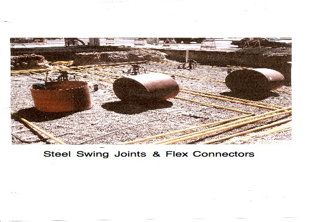

© Copyright 1999-2015 Anode Systems Company
Underground Storage Tank (Gasoline) Cathodic Protection Testing
Steel Swing Joints & Flex Connectors
124 North 22nd Court Grand Junction, Colorado 81501 (970) 243-4149 or (888) 609-9766 toll-free

At those locations where fiberglass tanks and piping is used, the only steel components that may need cathodic protection are the steel swing joints and stainless steel flex connectors. If cathodic protection is required on these steel segments, magnesium anodes may not work. Because of the electrical connection of these pipes to the electric wires and conduit, drive- in stake anodes may not raise the pipe-to-soil potential readings to -0.85 volts. One solution is with impressed current. A single anode connected to a rectifier can impress enough current to protect all the swing joints and flex connectors. They can all be connected to the rectifier by connecting the negative wire of the rectifier to the electric ground.

On occasion an owner will say that he has STIP tanks when in actuality, he doesn't. The owner may mistakenly think that a coated tank is a STIP tank. This can be checked as above by measuring the electrical resistance between the bottom of the tank and the pump or conduit. A low reading will confirm that the tank is not isolated. A low resistance reading to the fill pipe is further proof that the tank is not a STIP tank.